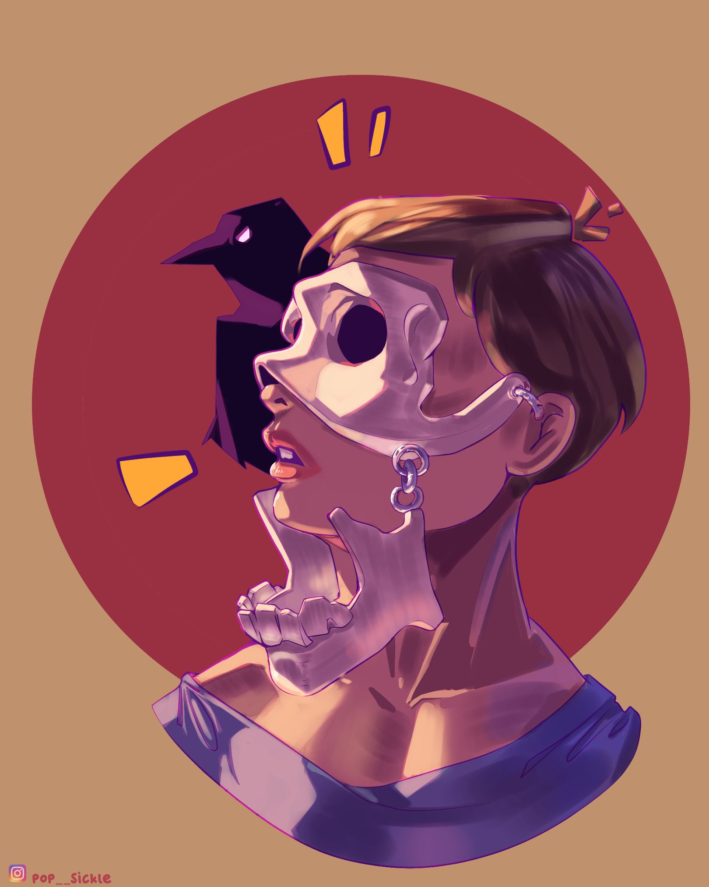

Cartoonizing Faces
On 2023, Kesh, a North Indian artist had held an Online Art Competion. The participants were supposed to draw any reference portraits into cartoons. The artworks in this series were created to join in the Competion.



On 2023, Kesh, a North Indian artist had held an Online Art Competion. The participants were supposed to draw any reference portraits into cartoons. The artworks in this series were created to join in the Competion.